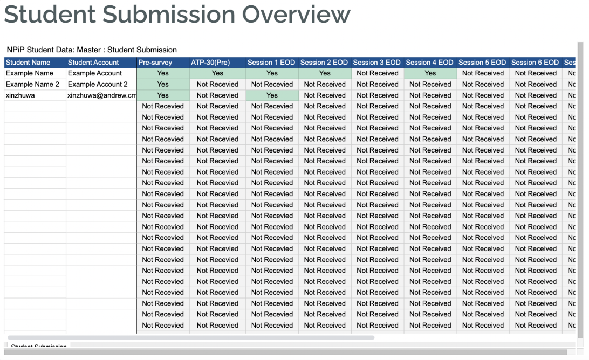
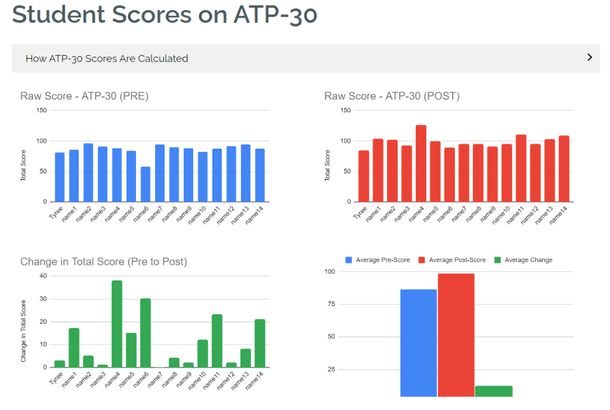
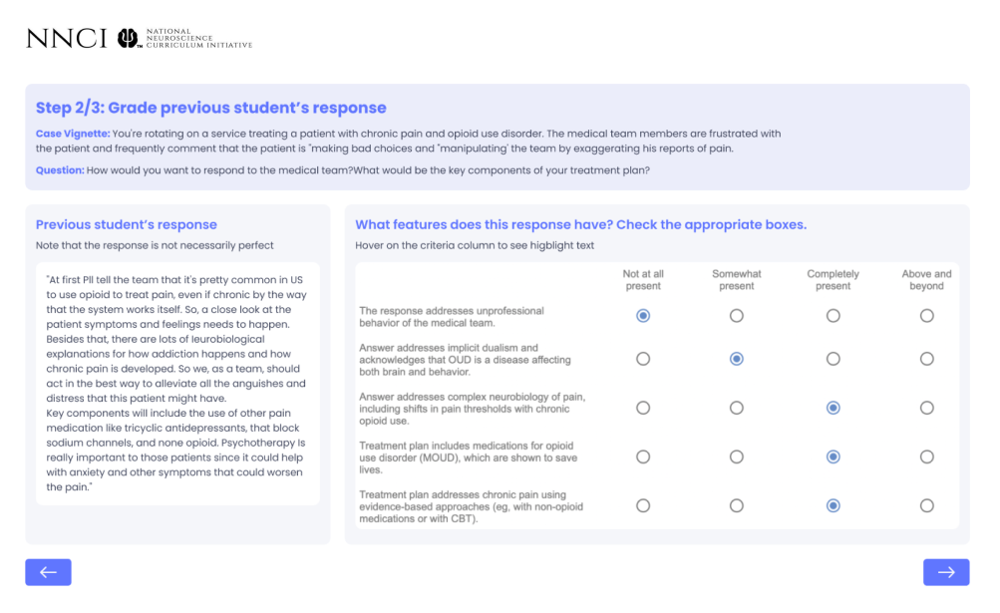
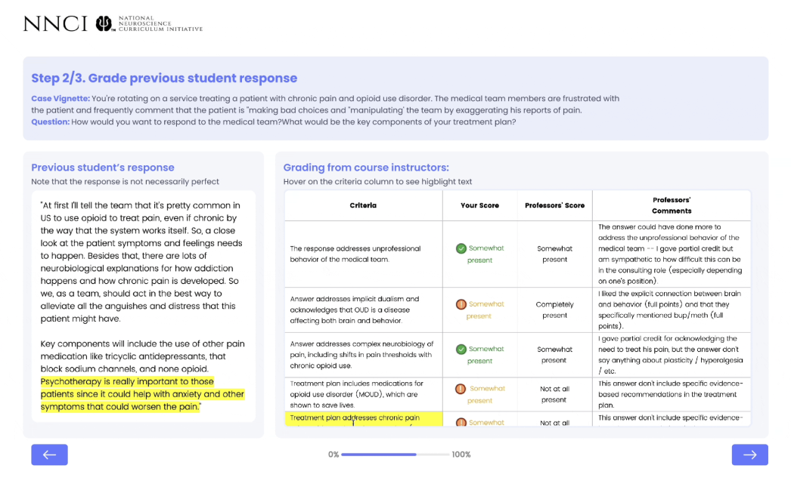
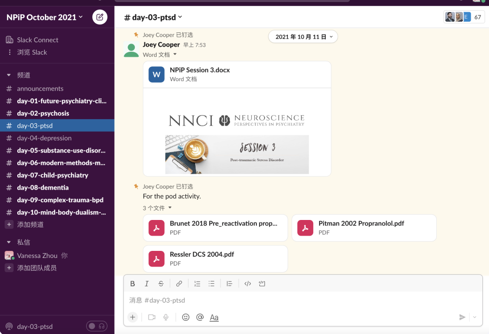
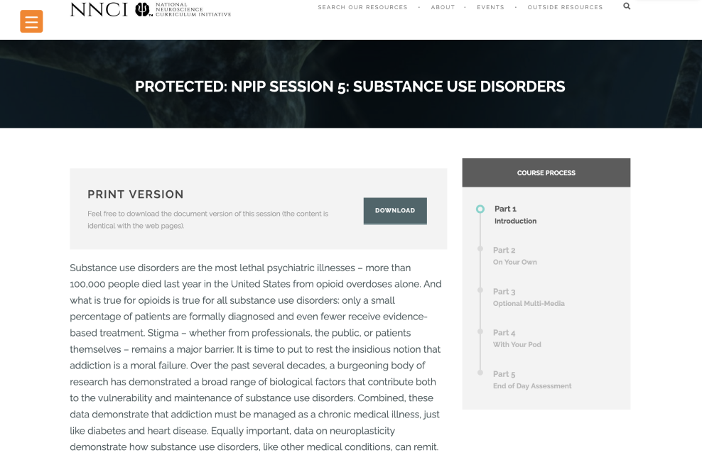

METALS Capstone Project
Jan 2022 - Aug 2022
Role: Research Lead, Co-Project Lead
Role: Research Lead, Co-Project Lead
Project Overview
The National Neuroscience Curriculum Initiative (NNCI) offers online courses that prepare psychiatrists and other doctors to effectively treat patients with mental illness and combat the stigma against mental illness. Carnegie Mellon University's mEducate Learning Engineering Team partnered with NNCI to supercharge the effectiveness of their courses, preparing doctors to improve patient outcomes.
To meet the needs of our stakeholders (doctors, medical students, patients, and instructors), our team delivered instructor and student-facing dashboards that allow for learning to be visualized; a tool to facilitate formative assessment and instruction throughout the course; a new information architecture to enhance learner usability; user guides to enable NNCI instructors to continue using the deliverables without mEducate support, and an evaluation plan to measure the impact of instructional changes.
Overall, our solutions lead to a 300% increase in explanatory feedback provided to students, a 200% increase in the amount of available learning data, and a 20% increase in the usability of the course platform.
NNCI Integrate Suite
Learning Dashboards


Student learning insights and stigma change data are automatically piped into visualizations embedded in NNCI's website. This way, instructors can assess the effectiveness of each component of the course and make informed iteration decisions. Each student can see their scores and feedback from instructors to keep up-to-date on their performance.
We developed an innovative, research-supported assessment flow to provide more feedback to students. First, students are presented with a clinical vignette involving a patient with a mental illness.
After writing and submitting their response, students use a rubric to evaluate several learner-sourced responses that include misconceptions. Students compare the scores that they give against instructor-generated scores and feedback.
Finally, students apply what they've learned and revise.
Table Review


Course Migration

Before

After
Prior to NNCIntegrate, the NPiP course was managed in Slack; students were messaged with a PDF document with instructional materials each day.
Now, students progress through the NPiP course on the NNCI website. Our information architecture and segmentation ensure that students always know how much progress they've made during a session. Students can easily navigate throughout the course using a hamburger menu.
Success Metrics
For more information, visit our website:
Meducate.Space